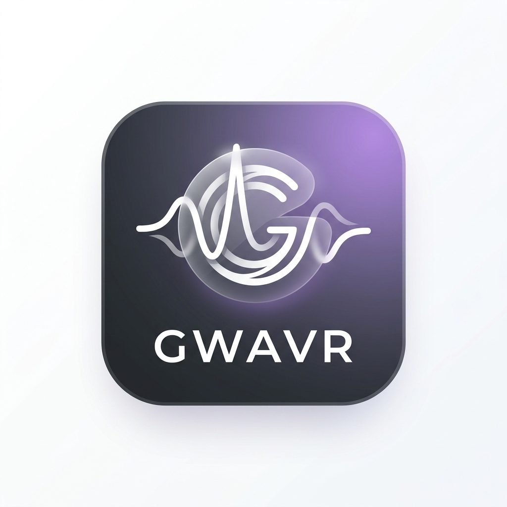
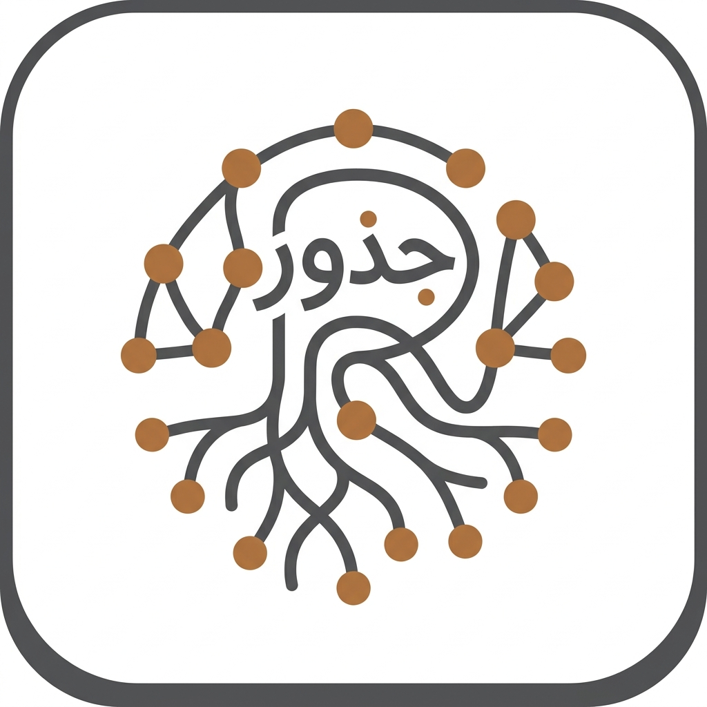

真空工堂（Digital Studio Shinku-Kodo）は、テクノロジーとアイデアの力で新しい価値を創造する、パーソナル・ソフトウェア開発スタジオです。
Discover MoreDigital Studio Shinku-Kodo は、個人開発から生まれたソフトウェア開発スタジオです。 最新のAI（LLM）技術や、React Native、Next.js、Supabaseといったモダンなフロントエンド・バックエンド技術を積極的に採用し、 社会の多様なニーズに柔軟かつ迅速に応えるプロダクトを生み出しています。
モバイルアプリケーションおよびWebサービスの企画・開発・運営を行っています。

"Voice of Queers"をコンセプトに、クィアなクリエイターの声を可視化するキュレーションメディア。AIによる自動文字起こし・意味づけ技術を活用し、「あの話題について話していた回」をピンポイントで見つけ出せる新しい音声探索体験も提供しています。
gwavr.com を見る
アラビア語特有の「語根（Root）」システムに着目した、AI駆動型の語彙学習・探索Webアプリケーション。単語から語根を特定し、派生語のネットワークを効率的に学べる機能を最新のAI（Gemini）とモダンインフラで構築・運用しています。
rootna.net を見る事業に関するお問い合わせやご相談は、以下のフォームよりお願いいたします。